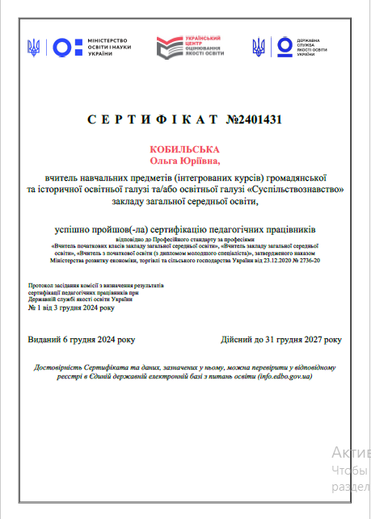

Сертифікація вчителів історії
Зовнішнє оцінювання професійних компетентностей та експертний супровід педагогів
Особисті досягнення

Успішне проходження сертифікації (2024 рік)
У 2024 році я успішно пройшла всі етапи зовнішнього оцінювання професійних компетентностей педагогічних працівників, підтвердивши високий рівень педагогічної майстерності та володіння сучасними освітніми технологіями.
Навчання кандидатів у експерти (2026 рік)
У 2026 році успішно пройшла спеціалізоване навчання кандидатів у експерти з оцінювання практичного досвіду роботи учасників сертифікації вчителів навчальних предметів громадянської та історичної освітньої галузі Державної служби якості освіти України.
Про процес сертифікації вчителів історії
Сертифікація педагогічних працівників — це зовнішнє оцінювання професійних компетентностей, яке має на меті виявлення та заохочення вчителів з високим рівнем педагогічної майстерності, що впроваджують і поширюють інноваційні освітні технології.
Методи збирання інформації експертами
Вивчення практичного досвіду роботи учасника сертифікації організовується Державною службою якості освіти (ДСЯО) і здійснюється за допомогою 5 ключових методів:
- Аналіз самопрезентації: демонстрація власного досвіду та досягнень за останні 2 роки (до 20 хв).
- Спостереження за навчальними заняттями: оцінювання щонайменше 2 уроків у синхронному чи очному форматі.
- Спостереження за самоаналізом уроку: оцінка вміння критично аналізувати власну діяльність (до 10 хв).
- Розв’язання ситуаційних завдань: аналіз педагогічних кейсів та обґрунтування рішень.
- Інтерв’ю з учасником: підсумкова співбесіда для уточнення необхідних показників (до 30 хв).
12 Професійних компетентностей
Оцінювання проводиться за 22 критеріями відповідно до Професійного стандарту «Вчитель закладу загальної середньої освіти» за 5-бальною шкалою (від 22 до 110 балів загалом):